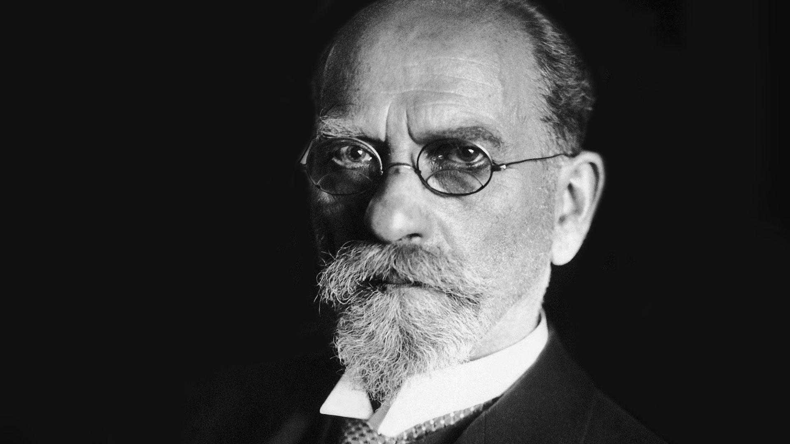

<div class="jumbotron jumbotron-fluid">
  <div class="container">
    <h1 translate class="display-4">
      {{ 'Title' | translate }}
    </h1>
  </div>
</div>

<!-- <div
(click)="multiState = multiState == 'start' ? 'end' : 'start'"
[@multi]="multiState"
></div> -->


<!-- <div
  (mousedown)="clickedDivState = 'active'"
  (click)="changeDivState()"
  [@clickedDiv]="clickedDivState"
></div> -->

  <div class="row justify-content-center">
      
  </div>

  <div class="routes-bloc row">
        <div class="col-md-2"></div>
        <div class="col-md-2">
            
            <a class="display-3" href="/bio">Вы можете познакомиться с биографией Гуссерля</a>
        </div>
        <div class="col-md-2">
            
            <a class="display-3" href="/bibliography">Вы можете познакомиться с его работами Гуссерля</a>
        </div>
        <div class="col-md-2">
            
            <a class="display-3" href="/bibliography">Вы можете познакомиться с библиографией его изданий и работ</a>
        </div>
        <div class="col-lg-2">
            
            <a class="display-3" href="/gallery">Вы можете познакомиться с фотогалереей Гуссерля</a>
        </div>
      </div>


